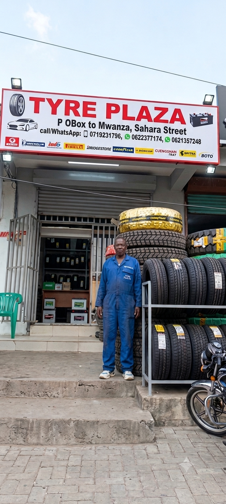
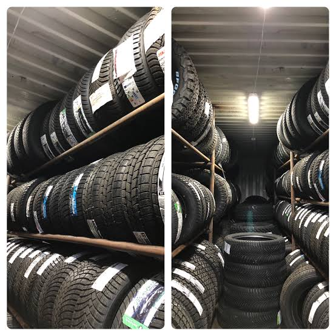
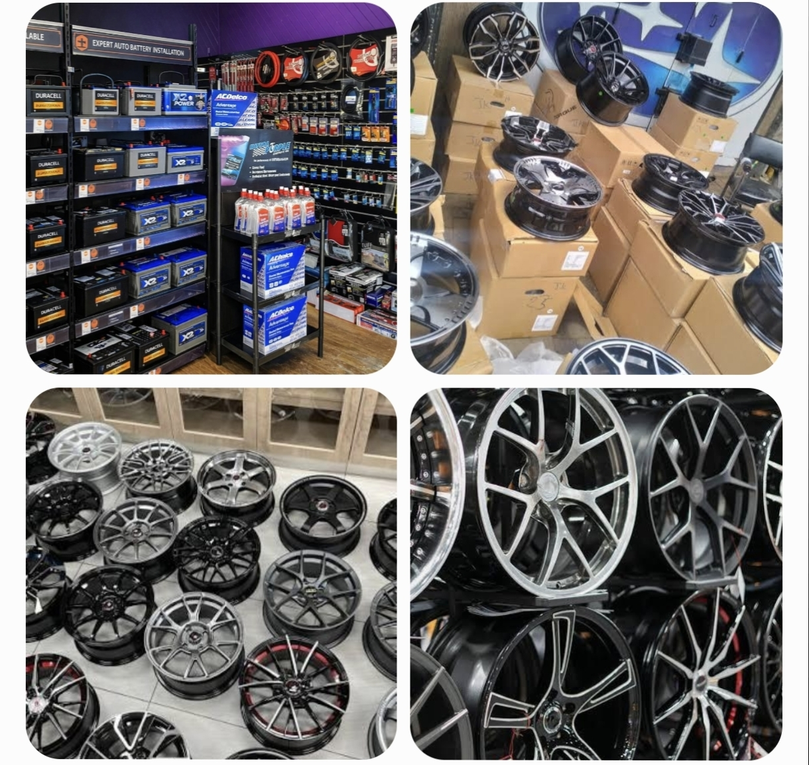

Historia yetu, maono yetu, na jinsi tulivyokuwa duka la matairi linaloaminiwa zaidi Mwanza, Tanzania kwa zaidi ya miaka 35.
Tyre Plaza ilianzishwa miaka 35+ iliyopita kama duka dogo la matairi Pamba Road, Mwanza. Mwanzilishi alikuwa na ndoto moja: kuwapa Watanzania matairi ya ubora wa kweli kwa bei wanayoweza kumudu.
Leo, Tyre Plaza ni duka linaloaminiwa zaidi la matairi, betri na rims Mwanza. Tunasambaza kwa watu binafsi, makampuni makubwa ya usafirishaji, migodi, mabasi na taasisi za serikali.
Siri ya mafanikio yetu ni rahisi: bidhaa asili, bei za ushindani, na huduma ya moyo wote.



Kutoa matairi, betri na rims za ubora wa juu kwa bei zinazofaa, huku tukitoa huduma bora inayomfanya kila mteja ajiskie ana thamani. Tunaamini kuwa usalama wa barabara unaanza na tairi bora.
Kuwa duka la matairi linaloongoza Tanzania nzima – linaloaminiwa na kila dereva, kampuni ya usafirishaji, na taasisi inayohitaji bidhaa za magari za ubora. Tunalenga kufikia kila mkoa Tanzania.
Hatudanganyi wateja wetu. Bei tunazosema ni bei halisi. Bidhaa tunazouza ni original. Huu ndio msingi wa miaka 35 ya mafanikio.
Hatouzi bidhaa yoyote bila kujua ubora wake. Kila tairi na betri inayoingia dukani kwetu imepita ukaguzi wa ubora.
Kila mteja anastahili huduma bora. Tunakusaidia kuchagua bidhaa sahihi – si tu kukuuzia tu.